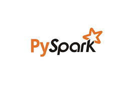
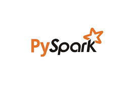
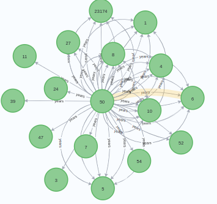
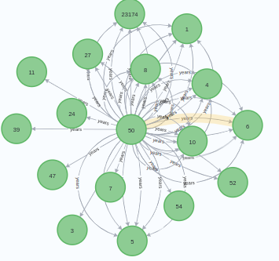

Welcome to my personal website!
Hi! I am Hossein.
I am currently a second-year MS student in CS at the University of Illinois Urbana-Champaign. I am interested in working with graphs and network science. I am currently doing my thesis in scientometric, trying to analyze large-sacle
citation networks and trying to improve clustering results by including node/edge features in the clustering and evaluation of clusters.
I like applications of graph mining, such as in social media analysis, scientometrics, cybersecurity, and transportation, to name a few. I am also interested in the theoretical concepts behind graph mining.
I also like data engineering and working with large-scale datasets. I also like developing software and building clean, scalable, and maintainable software.
I am to graduate from my master's program in May 2024.
In my personal website, I will go over my projects, my research experience and my publications.
Feel free to contact me if you have a question about my work!
Here I'll discuss the projects I've done which were more techinically interesting
My software engineering internship at AmericanAg
On summer 2023, I was a software engineer intern at AmericanAg, a well-known re-insurer specialized in agricultural insurance. This was a perfect experience for me as both to learn more about software engineering life cycle and insurance industry. I got to do two projects during my internship.
Claims forms modernization: For over twenty years, AmericanAg had been receiving claims through spreadsheets being emailed to them. This was a cumbersome process for them as they processed thousands of claims per year, and they needed to automate that. Me and two senior developers attended requirements gathering sessions with stakeholders --the claims department-- and documented the requirments. My part was to participate translating requirments to technical requirements, and in designing and developing database for our app for which we used Microsoft SQL server. I implemented the backend of the application in .NET using minimal APIs, and I mainly developed front-end of the web application using Typescript and Vue 3. I was able to implement and deliver the first phase of the project, which was the first notice of loss. The claims department were so happy with what they had! We finally productionized the code by deploying it on the internal server, and I wrote integration tests for my application, and documented what I had done.


Exploratory data-analysis in reinsurance: As the climate patterns are changing, the company was mainly concerned about if these trends are causing more sever weather events, increasing the overall losses. This investigation was given to the intern team as a project. I took the lead on this project and guided the process towards analyzing claims and policies. I mainly did the data-analysis part and the visualization part, and through this process I got to learn a lot about insurance and re-insurance industry, thanks to the employees who shared their knowledge about the field. The results, both from the insurance and re-insurance perspective showed hugher losses, when adjusted for other factors, which was most likely due to the trends in climate. We presented our findings to the leadership team, which was deeply impressed.


My research assistantship at University of Illinois Urbana-Champaign
I have been a research assistant at university of Illinois Urbana-Champaign since I started my masters program. While I have put my research projects on the research section, I will also put the more technical projects that I have worked on here. Most of these projects have a sense of data-engineering and graphs, for which I have a strong passion.Clustering of large citation graph: This is my project of thesis. The goal of this project is to incorporate node information into clustering, not only links. Our dataset is a large citation graph of PubMed papers, containing 14 million nodes and 90 million citation edges. For this project I had to crawl the whole 34 million PubMed record, clean them and store them on Postgres. Then chose the 14-million subset of interest. The final goal is to calculate some edge weights based on the similarity of nodes (papers) together based on the attributes they have and also based on the local graph structure. We will finally use this edge weights as an input to our clustering algorithm. Currently we are using Leiden, but it is likely that we will use GNNs or other non-linear methods for comparison as well. I have mainly used Pyspark and Postgres for this project.
 

Jazz musicians graph: This is the project that I am working on as a side project to my thesis. Dr.kirschbaum, our lab collaborator, has collected a dataset of 24000 jazz musicians and 7-million pairwise common sessions of this musicians. As a a sociologist, he is interested to investigate impact of different social factors of this musicians and their collaborations on their career success. I have mainly used Postgres and Neo4j to clean and load data and write queries to answer such questions, in a fairly short amount of time.
 

Undergraduate
Adversarial attack against an image stream: I did my undergraduate research in adversarial machine learnig, supervised by Dr.Amirmazlaghani. The problem I studied was to find an optimal behavior of an adversary which is interested to attack a limited number of images in an stream, to full a downstream neural model. preliminary results was published in ICLR 2021 preceedings We continued working on that paper, till we published it in Elsevier. I got inspired by variations of secretary problem to implement my research. I mainly used Keras, Tensorflow and Numpy to implement that project.
Graduate
On the fly repair of neural classifiers: I worked on ML interpretability with Dr.Jabbarvand on my first year. On the first semester, we developed a framework to detect decissions that a classifer made while it was uncertain. Then for those, we asked a simpler model (a similarity metric) to look at the ambiguous test sample and similar training samples that caused the ambiguity, and flipped the decission of the test sample was more similar to the other group. That way we was able to reduce test misclassifications by around 10% on average, tested for two models with different sizes on MNIST.The paper has been accepted at FSE 2023 preceedings.
Attention interpretation of LLMs: I also continued working with Dr.Jabbarvand, and collaborated on an interpretability project for LLMs. The goal of that project was to obtain attention weights of an LLM of code on a function. Then, we were interested to see if there was any correlation between attention weights of tokens, and the control flow graph or data flow graph of that function.
Meta-data based clustering of large citation graphs: Working on my thesis with Dr.Chacko and Dr.Warnow on community detection in citation graphs in medical documents. Investigating a 14-million citation graph of PubMed, we are interested to see whether incorporating paper's metadata such as publication year, title and abstract and keywords would help clustering results in terms of structural quality of clusters as well as semantic quaity of clusters.
Investigating trade-off between semantic and structural cluster quality: As the project for my CS514:Advanced network science, I took the lead to design a project in which we are interested to see the trade-off in intra-cluster similarity, inter-cluster similarity and structural quality metrics of clusters. This is an ongoing project and we, in a tema of three, have benchmarked various approaches. Our next step is to control this trade-off by modyfying clustering objective function. We are studying an attributed, synthetic network as well as a citation graph and we are using GNN clustering approaches as well as traditional algorithms.
Research interests
I am deeply interested in graphs and graph mining. In general, I mostly prefer applications of network science in social studies, studying social networks, scientometrics, cybersecurity, transportation and etc. I am also interested in tapping on my math skills to make a theoritical contribution, if there is a chance to. I am mostly interested to work on real-world, large datasets, where I can strech my technical skills, and we can probe the applicability of our models. I am a fan of behavioral economics, and I'd like to be able to use graph mining to work in this interdisciplinary field as well.
Limited Budget Adversarial Attack Against Online Image Stream. Link to the paper
Low-epsilon adversarial attack against a neural network online image stream classifier Link to the paper
Interpretable On-the-Fly Repair of Deep Neural Classifiers Link to the paper
I am also working on my thesis to make a publication in scientometric Journals.